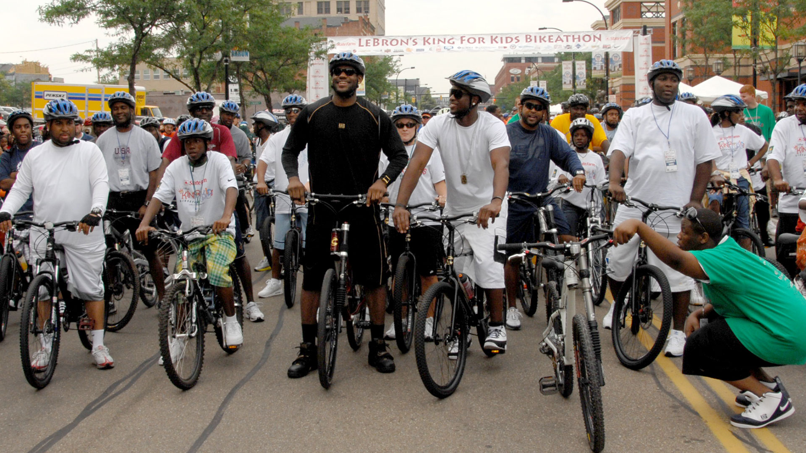

LeBron establishes the LeBron James Family Foundation.

2008
Bikeathon
LeBron hosts his first annual Bike-a-thon, a family friendly event bringing the city and its youth together for a day of fun.
2011
I PROMISE Program Created
LeBron re-focuses the Foundation's efforts on the life-changing power of education and establishes the I PROMISE Program. Taking on a new class of Akron Public School 3rd graders each year...
2014
We Are Family Reunion
LeBron hosts his first "We Are Family Reunion" that gathers all of his program's students and their families to kick off a brand new school year.
2015
I PROMISE Scholarship Announced
LeBron takes it a step further. He partnered with The University of Akron to guarantee all of his eligible I PROMISE students free, four year college scholarships. The announcement immediately changes the dreams and long-term plans of families across Akron.
2016
I PROMISE Institute Announced
LeBron establishes the I PROMISE Institute on the UA campus as an around-the-clock resource center for his I PROMISE students, acclimating them to life on a college campus.
2017
I PROMISE School Approved
The Board of Education formally approves the designs and creation of the I PROMISE School in Akron. Educators, civic leaders, academic experts, community members, parents and students immediately get to work on the creation of the curriculum, innovative school year, and wrap-around supports IPS will provide.
2018
I PROMISE School Opens
On July 30, 2018 the I PROMISE School opened its doors for an historic first day of school for its inaugural class of 240 I PROMISE students.
2019
I PROMISE Village
LeBron announces the I PROMISE Village by Graduate Hotels for students and their families who need a safe, comforting place to stay as they work through challenges they may be facing including homelessness, domestic violence, and other unforeseen circumstances.